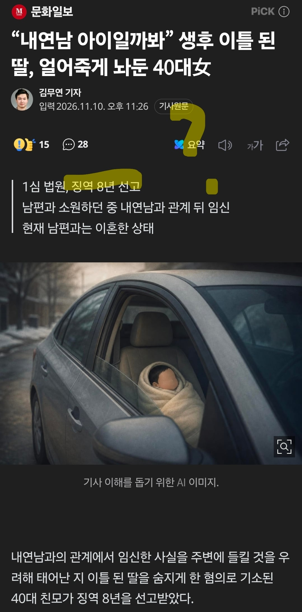

는 징역 8년(80년 아님)을 선고 받았답니다~~~

는 징역 8년(80년 아님)을 선고 받았답니다~~~
그냥 그 상황만 모면 하려는 애들이 꽤있더라
한~녀
자식 죽이는 범죄가 제대로 처벌을 안받으니 생기는 문제
아가야 어른들이 미안해
우리나라 양형규정의 문제는 자식이 부모를 죽이면 가중처벌이 심한데 부모가 자식 특히 만 1세 이하를 죽이면 상당히 관대하게 처벌함
누군가는 몇 년을 고생해도 생기지 않는 소중한 생명을... 넌 죽어서도 꼭 지옥에 가라
어차피 대법원에서 집유받을거임
대법은 형량을 다투는 게 아니라 법리해석을 다투는 법률심인데 어떻게
'대법원 가서 집유받을거임'
이라는 말이 나옴?
그러니까 3심까지 가서 형이 깎일대로 깎이고
그것도 형이 무겁다 항소 vs 형이 가볍다
대법에서 최종 집유 원심 확정
대충좀 알아들으셈
아가 너무 안타깝다

이 여자 이미 애가 다섯이라고 하던데 라디오 뉴스에서
웃기지만 낙태는 무죄인데
불륜들키기(들키는것 부터 가능성의 얘기임 걸려도 큰 처벌없음, 사회적 평판은 낮아짐)
자식 죽이기(무조건 걸리고 ㅈㄴ큰처벌받음, 사회적 인식 개씹좆박고 불륜사실도 들킴)
여기서 후자를 고르는 미친새끼가 있다고?